这篇论文的第一作者 Yuanzi Li 来自中国人民大学，合作作者覆盖中国人民大学与 Huawei Noah's Ark Lab。论文入口是 arXiv:2606.22803。截至本次访问，arXiv 的 Code/Data/Media 区域没有给出明确官方代码仓库，标题检索也没有发现可核验的项目页，因此代码状态应保守记为未公开或未核验。论文提出的 AdaptSim 不是一个新的会话推荐模型，而是一个用于评估 Conversational Recommender Systems 的用户模拟器：它希望用更少人工 prompt 调试成本迁移到新领域，同时生成可控的用户语言风格，并用轮级成对比较来评估 CRS 的基本能力和鲁棒性。
现有基于大语言模型的用户模拟器虽然能用于会话推荐评估，但仍依赖固定 prompt 和预定义动作空间，难以快速迁移到新领域；它们也难以精确复现用户的语言风格和动态偏好，导致对下游 CRS 的基本能力和鲁棒性评估都不够充分。
1. 背景和问题
会话推荐系统的评估难点在于，它不是一次性给出候选列表的静态推荐任务，而是一个用户和系统交替行动的多轮过程。用户会表达偏好、纠正系统、补充约束，系统则需要在语言理解、意图跟踪、推荐决策和自然语言回复之间持续切换。传统离线指标通常依赖历史日志或目标物品标签，但真实多轮对话的轨迹很快分叉：同一个初始请求，只要系统第一轮回复不同，后续用户反馈、系统追问和推荐对象就可能全部变掉。论文把这个问题放在 Conversational Recommender Systems 的评估语境下看，核心判断是：如果没有一个足够真实、可控、可迁移的用户模拟器，很难判断 CRS 的改进究竟来自推荐能力，还是来自更会迎合评测器、或者只是碰到了更容易的模拟对话。
作者先把理想用户模拟器拆成三项能力。第一是快速领域适配，即从美食、护肤、电商到其他推荐场景时，不要每次都依赖专家手写一套 prompt、动作标签和槽位模板。第二是细粒度用户建模，即模拟器不仅要知道用户想要什么商品，还要能控制正式、非正式、情绪、简洁、粗心等语言属性，因为真实用户不会总是表达得完整、礼貌、拼写正确。第三是评估有效性，即模拟器不仅要生成像人的话，还要支撑对 CRS 的基本能力和鲁棒性做公平比较，尤其要避免用过于完美的用户输入把系统弱点掩盖掉。
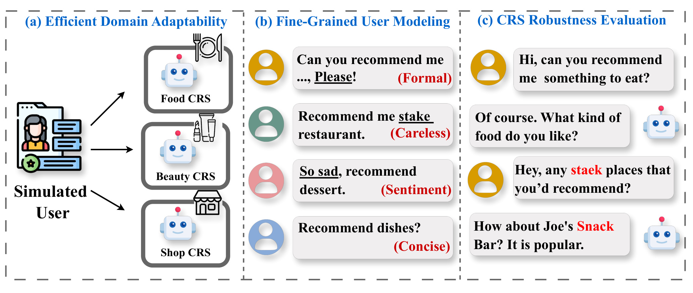
Fig. 1 把这三项能力画成了一个很直观的任务定义。左侧的模拟用户可以进入 Food CRS、Beauty CRS 和 Shop CRS，说明模拟器应该能跨领域复用，而不是绑定在单一电影或餐厅数据集上。中间部分展示了同一个推荐意图可以被说成正式语气、粗心拼写、带情绪或极简表达，这对应论文所说的 fine-grained user modeling。右侧则把一个拼写错误 staek 放进对话里，CRS 把 steak 场景误解成 Joe's Snack Bar，这说明推荐系统鲁棒性不是靠常规干净输入就能测出来的。图里最关键的不是某个模块多复杂，而是三条评估要求必须同时满足：迁移成本低、用户行为多样、下游比较仍然公平。
现有用户模拟器的缺口也正是在这三条线上展开。单 prompt 方法通常把用户资料、候选物品和任务说明塞进一个静态模板，一次生成用户回复；这类方法容易控制成本，但对话轨迹会很死板，动作和语言变化也难以细调。agent-based 方法把用户 profile、动作空间和回复生成拆开，看似更结构化，但很多动作仍是预定义集合，迁移新领域时需要人工重做动作定义。RecUserSim 这类工作虽然加入了语言风格建模，但论文指出它的后处理式 refinement 可能破坏上下文一致性，甚至导致模拟用户开始替系统推荐，也就是 role reversal。CSHI 这类固定动作空间方法则容易在多轮里反复问相似问题。
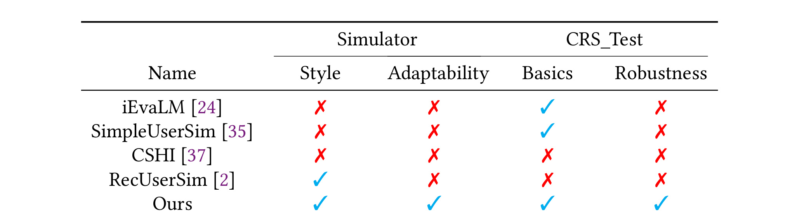
Table 1 的读法很简单，但它对论文动机很重要。表中把已有方法按 Style、Adaptability、Basics 和 Robustness 四列比较，iEvaLM、SimpleUserSim 和 CSHI 在风格控制或领域适配上都没有打勾；RecUserSim 有语言风格能力，但缺少快速适配和 CRS 测试鲁棒性；只有 Ours 同时覆盖四列。这里的勾叉不应理解为作者证明了所有维度都完全解决，而是说明 AdaptSim 的设计目标比单纯“生成像人的用户回复”更宽：它要服务一个可迁移的评估框架。对推荐系统读者来说，这张表也提示了一个容易被忽略的点：用户模拟器本身的能力不足会直接污染 CRS 评估结论。如果模拟器只会生成干净、礼貌、固定策略的用户，对话系统在拼写错误、情绪化表达、短句、省略约束等真实场景下的弱点就不会被暴露。
论文的第三个问题是评估协议本身。现有 CRS 评估可以是 dialogue-level pointwise、turn-level pointwise 或 dialogue-level pairwise。整段对话打一个分数太粗，会掩盖某一轮的关键错误；逐轮绝对打分虽然细，但容易因为评分尺度和 LLM judge 的偏好而不稳定；整段对话成对比较看起来公平，但两个系统一旦产生不同回复，后续上下文就开始分叉，后面几轮再比较就不是在同一问题上比较。AdaptSim 的 BFS-based turn-level pairwise evaluation 正是针对这个缺口：它希望让两个 CRS 在同一个局部历史下生成回复，再做成对判断，并用树状扩展保留多条可能轨迹。这个设定使论文不只是“做一个更会说话的模拟器”，而是把用户模拟和评估协议一起打包。
因此，这篇论文的价值可以概括为：它把用户模拟器的 prompt 适配、用户动作生成、语言风格控制和 CRS 评估协议串成一条闭环。这个闭环里的每一步都有一个现实动机：prompt 适配减少跨领域人工成本，开放动作减少固定动作空间的僵硬，先思考再回复增强风格一致性，BFS 成对评估减少上下文分叉造成的比较不公平。后文的方法和实验都围绕这四个部件展开。
2. 方法
AdaptSim 的整体流程可以从 Figure 2 读起。完整原图左侧先生成多领域用户画像，把用户的基础信息、领域偏好和上下文约束组织成自然语言资料；这里截取右侧核心流程，重点保留自动提示优化和模拟器反馈环。该流程用领域信息、初始 prompt 和模拟对话反馈迭代改写 prompt，最后把优化后的 prompt 接入模拟器。模拟器内部又分成 action generation 和 response generation 两层：action generation 决定下一步用户策略，response generation 再把动作变成受风格约束的用户话语。CRS 评估部分则把这个模拟器放进轮级成对比较协议里，让模拟用户和待评估系统交互。
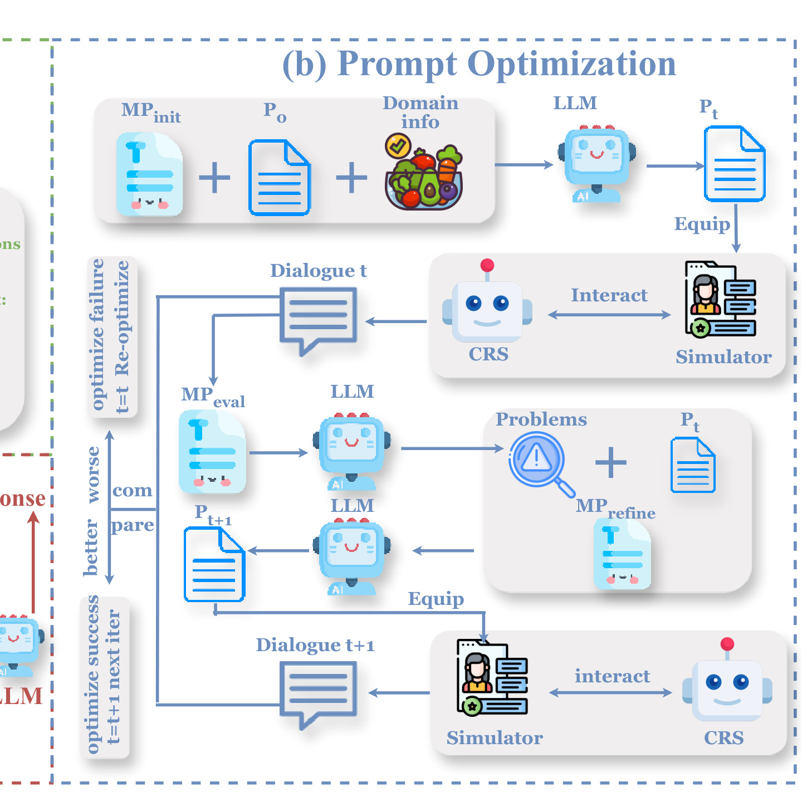
这张 Figure 2 截图聚焦右侧蓝色流程面板。上半部分展示 MPinit、Prompt0 和 Domain info 共同进入 LLM，生成当前领域 prompt Pt；Pt 被装备到 Simulator 后，与 CRS 交互产生 Dialogue t。中部和下部展示反馈闭环：Mpeval 读取对话发现 failure，MPrefine 根据 Problems 和当前 Pt 生成 Pt+1，再把新的 prompt 装回模拟器进入 Dialogue t+1。图中的 better、worse、compare、optimize success 和 next iter 标明了停止或继续优化的判断逻辑。完整原图还包含左侧用户 profile 与下方 action/response 生成面板；本文在正文里用文字说明这些部分，并用这张裁剪图突出后续公式最直接对应的 APO 反馈过程。它后面的关键是，AdaptSim 不把所有能力压进一个大 prompt，而是把“迁移领域”“决定动作”“控制语言”“评估系统”拆成不同环节，每个环节都能单独被实验验证。
2.1 自动提示优化：从领域初始化到反馈收敛
自动提示优化对应论文 Section 4.1，也是 AdaptSim 降低人工迁移成本的核心。传统用户模拟器往往要专家针对新领域写 prompt，比如美食领域要写口味、价格、位置、场景，护肤领域要写肤质、品牌、功效、使用时间。AdaptSim 改成先给定通用模板和领域信息，由 LLM 生成领域特定 prompt，然后通过模拟对话发现问题，再把问题反馈给 prompt refinement。这个过程不是一次性生成，而是有初始化、错误检测、提示改写和停止条件。
符号解释：D 是目标领域信息，Prompt_0 是通用初始模板，MetaPrompt_init 是要求 LLM 根据领域信息改写模板的元提示，Prompt_1 是第一版领域 prompt。这个公式表达的是领域适配阶段：不是人工从零写 prompt，而是让模型把领域字段、用户资料结构和任务说明合成一个可用于模拟的 prompt。它的好处是迁移速度快，但边界也很明显：如果 D 的字段不完整，或者 MetaPrompt_init 对领域约束理解错了，后续模拟会从一开始就带偏。
符号解释：B_1 是使用 Prompt_1 生成的一批模拟对话，d^{(1)}_k 表示第一轮 prompt 生成的第 k 条对话，N 是批大小。这里的 batch 很重要，因为 prompt 质量不能靠单条对话判断。作者用一批对话暴露重复动作、角色混淆、表达不自然、领域约束遗漏等问题，再把这些问题汇总给后续 refinement。也就是说，AdaptSim 把 prompt 调试变成了一个可迭代的实验过程。
符号解释：F^{(t)}_k 是第 t 轮第 k 条对话里被元评估提示识别出来的问题集合，E_t 是整批对话的问题并集。MetaPrompt_eval 的作用类似审稿人或测试器，它读取模拟对话，找出用户行为、语言风格、目标一致性和角色扮演上的缺陷。这里的关键机制是 把对话失败显式转写成 prompt 优化信号。不过这也是一个风险点：如果评估 LLM 漏掉细微问题，或者把合理的用户行为误判成问题，E_t 就会把错误反馈传给下一轮 prompt。
符号解释：Prompt_t 是当前 prompt，E_t 是当前批次的问题集合，MetaPrompt_refine 是用于改写 prompt 的元提示，Prompt_{t+1} 是下一版 prompt。这个公式把 error detection 连接到 refinement：不是让模型凭空“写得更好”，而是要求它针对问题集合修补用户意图表达、动作指导和风格约束。论文的 stopping criteria 也不是只看迭代次数，而是用新旧 batch 的 pairwise 质量比较判断是否继续。
符号解释：B_{t+1} 是更新 prompt 后生成的新 batch，B_t 是上一轮 batch，win_rate 和 loss_rate 来自 LLM-as-judge 的成对比较。如果新 batch 的胜率高于败率，就认为 prompt 有实质改善；否则 noCount 增加，连续多轮无改善后停止。这个条件避免了无休止 prompt 调试，也让“更好”具有可操作定义。但它仍然依赖 judge 的可靠性，所以实验中 Figure 4 的人工一致性验证不是装饰，而是支撑这个优化闭环的必要证据。
2.2 策略层控制：开放动作生成
第二个模块是 strategy-level control。已有 agent-based 模拟器常常定义固定 action set，例如 ask preference、accept、reject、recommend 等。固定动作有利于控制，但会把用户行为压缩到设计者预想的集合里，到了新领域或者开放对话时就很僵硬。AdaptSim 借鉴 Bayesian Brain Hypothesis，把用户下一步动作建模成条件概率推断：在当前对话历史和用户 profile 下，LLM 产生候选动作及其概率，再选择最可能的动作。
符号解释：H 是当前对话历史，P 是用户 profile，a 是候选用户动作，pi(a mid H, P) 表示在历史和画像条件下动作 a 的概率，Prompt_action 是动作生成提示。这里的动作不是闭集标签，而是开放文本，例如“补充预算约束”“纠正系统误解”“表达对推荐项不满意并要求换口味”。这让模拟器可以更贴近真实用户，因为真实用户不会严格遵守研究者预定义的动作分类。
符号解释：a^* 是最终选择的用户动作，arg max 表示从候选动作中选概率最高者。这个设计让 action generation 有明确决策规则，也便于解释为什么用户下一轮要这么说。它缓解了固定动作空间导致的重复和僵硬，但也带来一个论文自己在 limitations 里承认的边界：最大概率动作倾向于高频、典型行为，可能压制罕见但重要的压力测试行为，比如突然改变话题、前后偏好矛盾、或极端简短的反问。因此工程使用时，开放动作生成不应只保留 greedy 版本，最好后续加入覆盖率目标或多样性采样。
2.3 语言层控制：先思考再回复
第三个模块解决的是 linguistic style，而不是推荐意图。论文认为，在多轮对话里，风格目标很容易被上下文噪声冲淡：模型可能一开始能保持 formal 或 concise，但对话长了以后就回到默认的自然、完整、礼貌表达。AdaptSim 因此加入一个显式 thinking step，要求模型在最终生成 response 前先检查自己是否遵守指定语言风格。论文给出的提示格式类似：先问自己 response style 是什么，是否正在遵循这个 style，再生成最终回答。
符号解释：R 是最终用户回复，S 是指定语言风格，a^ 是策略层选出的动作，H 是对话历史，P 是用户 profile，Prompt_response 是回复生成提示。这个公式把策略和语言分开：动作层决定“用户要做什么”，语言层决定“用户怎么说”。AdaptSim 的细粒度用户模拟不是只给模型一句风格标签，而是把风格目标放进生成前的自我检查中*。对 CRS 鲁棒性评估来说，这一点尤其重要，因为 typo、word shuffle、carelessness 这类用户输入不是商品偏好的变化，而是表达形式的变化；如果模拟器不能稳定控制表达形式，就很难构造可重复的鲁棒性测试。
2.4 BFS 轮级成对评估：保持上下文一致
第四个模块是 CRS evaluation protocol。作者把 CRS 基本能力评估和鲁棒性评估都写成 BFS-based turn-level pairwise evaluation。对于基本能力评估，协议从初始用户查询开始，把同一个 history h 输入给 CRS1 和 CRS2，得到 r1 和 r2，再对这两个回复做 pairwise evaluation。然后用户模拟器分别接着 r1 和 r2 生成新用户动作 a1 和 a2，把 h 加上对应分支重新入队。这样做的好处是每一次比较都发生在同一个局部上下文下，不会像整段 dialogue-level 比较那样让两个系统在完全不同轨迹上被比较。
鲁棒性评估的改动是把两个系统换成同一个 CRS 面对 normal user 和 careless user。对于同一个 history h，模拟器生成 noisy query a_c 和 clean query a_n，CRS 分别回复 r_c 和 r_n，再成对比较。为了避免噪声分支污染后续上下文，论文只把 clean trajectory 入队，noisy branch 用于当前轮评估。这是一个比较务实的设计：如果一直沿着 noisy branch 扩展，后续错误会混在一起，很难判断某一轮 typo 或 word dropping 的直接影响；保留 clean context 则能做局部压力测试。
方法上我最认可的是它把模拟器和评估协议互相约束：模拟器不是单独追求“像人”，而是要生成可用于公平比较的输入；评估协议也不是单独依赖 judge，而是要求上下文匹配、轮级比较和风格扰动都可控。AdaptSim 的核心贡献是把 prompt 适配、用户策略、语言风格和 CRS 评估四件事放进一个闭环，而不是只优化其中一个环节。 但它的失败模式也来自同一个闭环：如果元评估 LLM、动作选择规则或 judge 出现系统性偏差，偏差会同时影响 prompt 优化和最终 CRS 排名。
3. 实验结果
实验分成两大组。RQ1 评估 AdaptSim 自己是不是一个更好的 user simulator，包括模拟质量、风格控制、开放场景泛化、组件消融和案例分析。RQ2 评估 AdaptSim 能不能支持可靠的 CRS evaluation，包括基本能力评估和鲁棒性评估。数据域覆盖 Food、Beauty 和 Shop，模拟器 baselines 包括 iEvaLM、CSHI 和 RecUserSim；CRS 侧则比较 BaseCRS 与 AgentCRS，并且考虑 GPT-3.5-turbo、GPT-4o-mini、GPT-4.1-mini、Qwen3-8B 等不同 backbone。评价指标也分两套：用户模拟器用 naturalness、clarity、adaptability、relevance、role-play ability、realism；CRS 用 action quality、language quality、recommendation quality。
3.1 模拟质量和评估可靠性
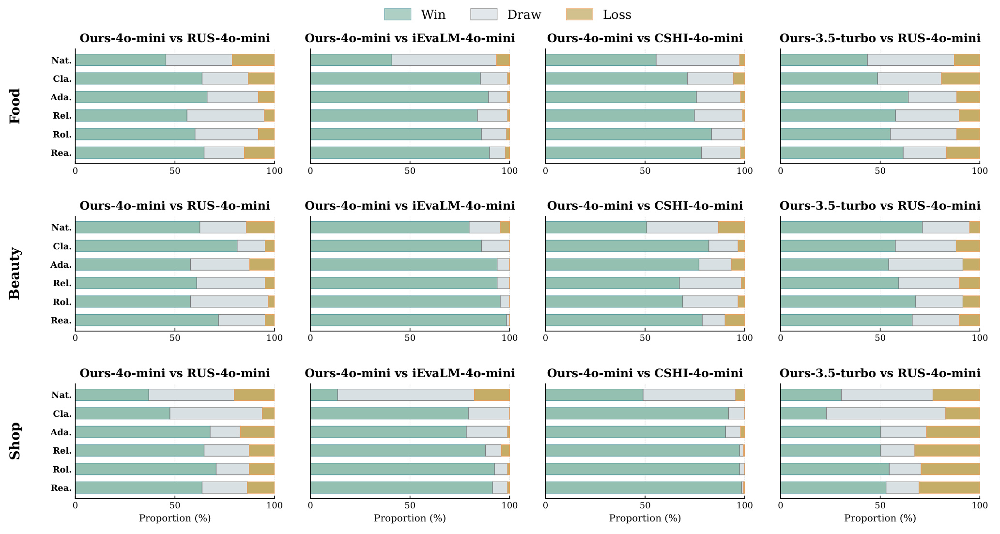
Fig. 3 是 RQ1.1 的主结果。它按 Food、Beauty、Shop 三个领域展开，每个领域又比较四组设置：Ours-4o-mini 对 RecUserSim、iEvaLM、CSHI，以及 Ours-3.5-turbo 对 RecUserSim。绿色代表 AdaptSim win，灰色代表 draw，黄色代表 loss。最直观的模式是，在 GPT-4o-mini backbone 下，AdaptSim 对三个基线几乎在六个维度上都取得更大的 win 区间，尤其对 iEvaLM 和 CSHI 的优势非常明显。这说明自动 prompt 优化和开放动作生成不只是改善某一个指标，而是同时影响自然度、清晰度、相关性和角色扮演。弱 backbone 的 Ours-3.5-turbo 仍能在大多数维度和领域上保持竞争力，但 naturalness 的优势变小，论文也承认自然度更受底层语言模型能力影响。这里我会把结论读成：框架设计能改善行为和评估维度，但语言表面质量仍受 backbone 上限约束。
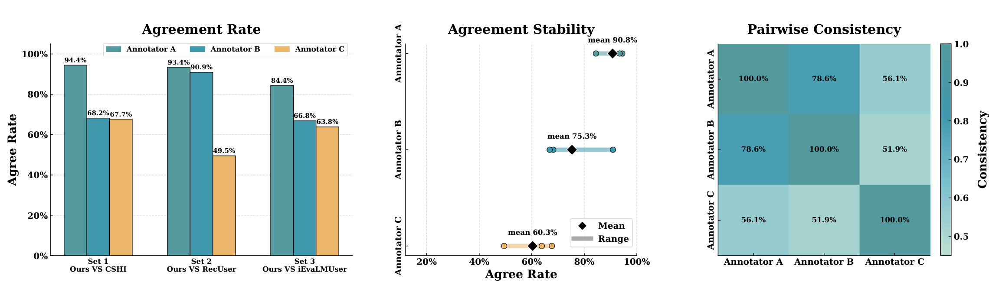
Fig. 4 是对评估协议可信度的补强。左侧的 agreement rate 显示三位推荐系统方向资深标注者对 LLM judge 的判定有不同程度的一致：Annotator A 在三组对比上都很高，Annotator B 居中，Annotator C 波动更大。中间的 stability 面板给出三个标注者的平均一致率，分别约为 90.8%、75.3% 和 60.3%；右侧 heatmap 展示标注者之间的 pairwise consistency。这个结果不是完美一致，但足以说明 LLM-as-judge 在这里不是完全黑箱或随机判断。需要注意的是，60.3% 也提示了剩余主观性，尤其在自然度、真实感、角色扮演这类开放指标上，人类之间也会分歧。因此 Table 2、Figure 3、Figure 8 的 win/draw/loss 结果应理解为相对比较信号，而不是绝对真值。
3.2 风格控制、开放动作和 prompt 优化的证据
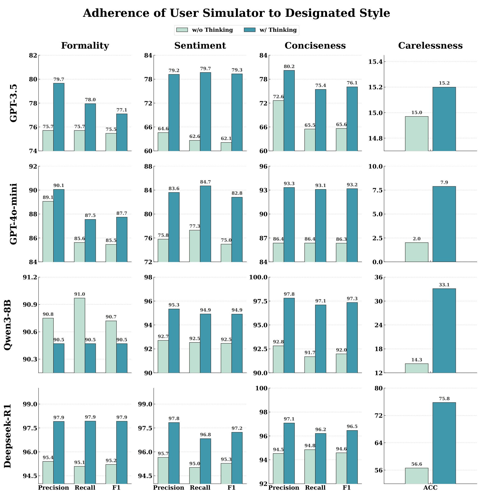
Fig. 5 直接检验 thinking-enhanced style generation。横向是四类风格属性：formality、sentiment、conciseness 和 carelessness；纵向是 GPT-3.5、GPT-4o-mini、Qwen3-8B、DeepSeek-R1 四个 backbone；每个小图比较 w/o Thinking 与 w/ Thinking。常规风格上，thinking 版本通常显著更高，DeepSeek-R1 在 formality、sentiment、conciseness 上多项指标超过 95%。更有意思的是 carelessness：LLM 天然倾向于生成通顺、规范语言，所以让它稳定制造拼写错误、词序混乱或不完整表达并不容易。图中 DeepSeek-R1 的 carelessness ACC 从 56.6 提升到 75.8，说明显式思考步骤确实能让模型更稳定地服从“不完美表达”的控制目标。对推荐系统评估而言，这比单纯风格生成更关键，因为鲁棒性测试需要的是可控噪声，而不是偶然出现的错别字。
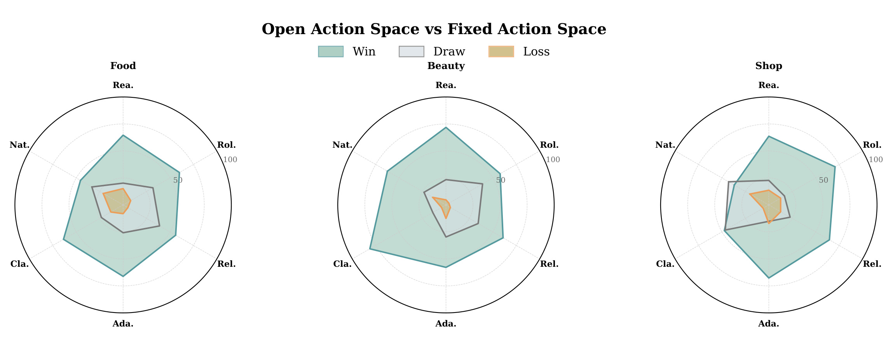
Fig. 7 检验 open-ended action generation。三个雷达图分别对应 Food、Beauty、Shop，绿色区域代表 open action space 相对 fixed action space 的 win 比例。可以看到开放动作在 realism、clarity、adaptability、role-play 等维度上普遍覆盖更大区域。这个结果和方法假设一致：固定动作集合会让用户行为落在有限模板里，容易重复、缺乏上下文响应；开放动作则可以根据 history 和 profile 生成更具体的下一步行为。这里也要区分“开放”与“无约束”。AdaptSim 并不是让 LLM 随意说话，而是用 profile 和 history 条件化动作分布，再选 a^*。这种设计保留了可解释性，但如果只用最大概率动作，仍可能偏向常见行为，这也是总结里应继续跟进的风险。
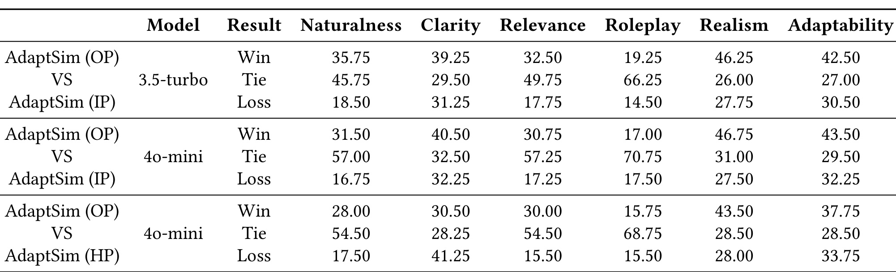
Table 2 是 APO 的直接证据。它比较 optimized prompt、initial prompt 和 human-crafted prompt，在 GPT-3.5-turbo 与 GPT-4o-mini 等设置下看 naturalness、clarity、relevance、roleplay、realism、adaptability 的 win/tie/loss。最值得看的是 optimized prompt 对 initial prompt：例如 3.5-turbo 下，OP 在 naturalness、clarity、relevance、realism、adaptability 上都有明显 win，虽然 roleplay 上 tie 很高；4o-mini 下也出现类似模式。OP 对 HP 的比较更微妙，win 不总是压倒性，但 OP 在 naturalness、relevance、realism 和 adaptability 上仍有优势。这个表说明自动优化不是只替代人工省事，而是在一些维度上能产生比初始模板和人工 prompt 更稳定的模拟行为。它也说明 prompt 工程里“人写一个强模板”不一定足够，因为用户模拟质量取决于真实交互反馈暴露出的错误模式。
论文还做了 chit-chat 泛化和附录案例分析，但我没有把 Figure 6 和附录 Figures 10、12-19 都截进正文。原因是 Figure 6 是对开放聊天的补充，能说明 AdaptSim 不只适用于 CRS，但不是本文推荐评估主线；附录案例则主要展示基线模拟器 role reversal 和 repeated questioning，以及 AdaptSim 在 formal、informal、long、short 等风格下的好例子。正文已经通过 Figure 5、Figure 7 和 Table 2 解释了这些失败模式的机制来源：没有策略层指导容易角色反转，固定动作空间容易重复提问，没有 thinking step 容易风格漂移。把所有附录对话都贴出会降低笔记的主线密度。
3.3 AdaptSim 用于 CRS 基本能力与鲁棒性评估
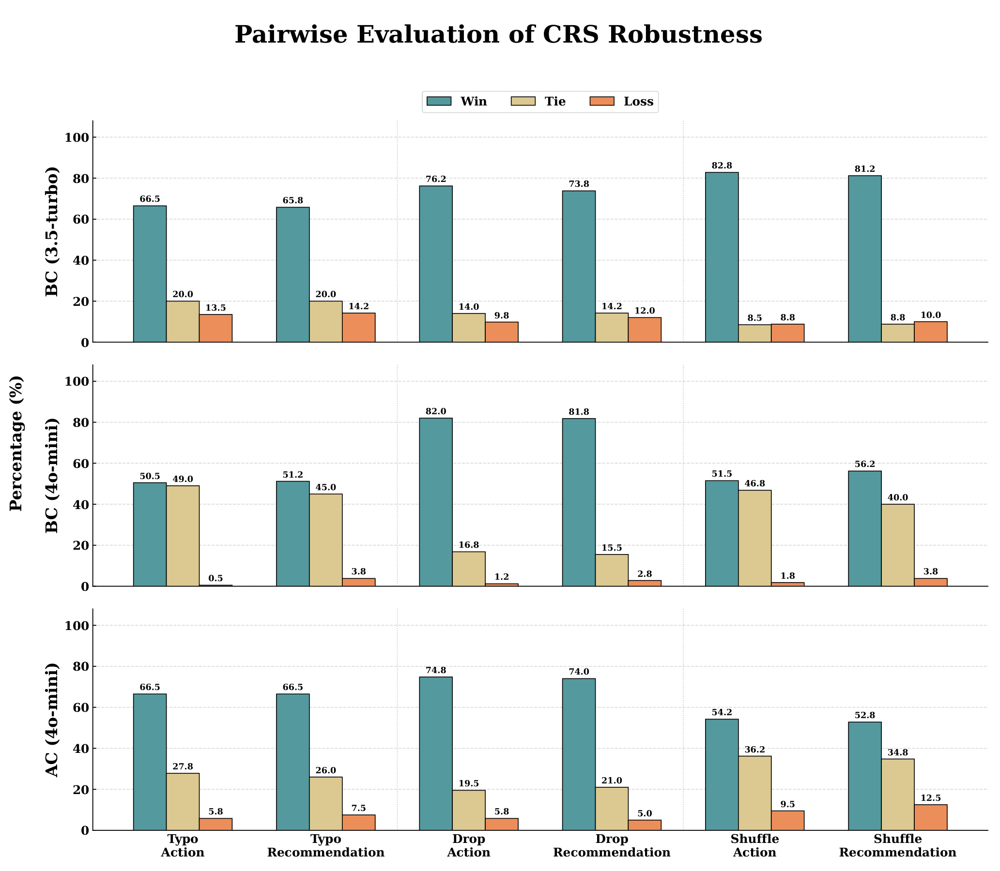
Fig. 8 是 RQ2.2 的关键图。它把 careless user 拆成 typo、drop 和 shuffle，并分别看 Action 与 Recommendation 两类影响；CRS 包括 BaseCRS 使用 GPT-3.5-turbo、BaseCRS 使用 GPT-4o-mini、AgentCRS 使用 GPT-4o-mini。图中绿色 win 表示正常输入相对粗心输入更占优，整体模式非常清楚：拼写错误、词丢失和词序打乱都会让 CRS 性能下降。尤其在 BaseCRS GPT-3.5-turbo 下，drop action 和 drop recommendation 的 win 比例分别达到 76.2 和 73.8，shuffle 场景也有 82.8 和 81.2；即使用更强的 GPT-4o-mini 或更结构化的 AgentCRS，粗心输入也没有被完全消除。这个结果的价值是把“鲁棒性”从抽象口号变成可控实验：同一历史、同一任务，只改变用户表达质量，然后轮级比较系统回复。对线上 CRS 来说，这比只测理想用户输入更接近真实风险。
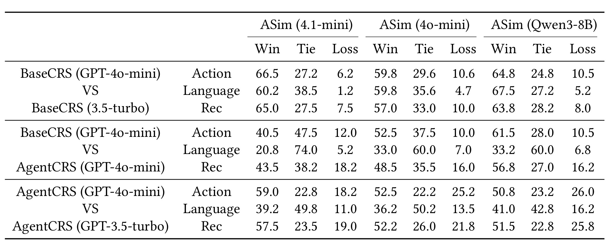
Table 3 对应 RQ2.1，使用 AdaptSim 评估 BaseCRS 和 AgentCRS 在 action、language、recommendation 三个维度上的差异。表中 ASim 表示模拟器 backbone，BC 是 BaseCRS，AC 是 AgentCRS。第一组 BaseCRS GPT-4o-mini 对 BaseCRS 3.5-turbo 的比较很直观：无论 ASim backbone 是 GPT-4.1-mini、GPT-4o-mini 还是 Qwen3-8B，GPT-4o-mini 版本在 action、language、rec 上都有很高 win，说明更强 backbone 提升了 CRS 的决策与表达。第二组 BaseCRS GPT-4o-mini 对 AgentCRS GPT-4o-mini 则更有分析价值：BaseCRS 在 action 和 rec 上常常胜出，而 language 维度 tie 很多，说明模块化 AgentCRS 不一定在推荐决策上更灵活，固定规划和动作模块可能限制了响应多样性。第三组 AgentCRS 内部的 backbone 对比同样显示 GPT-4o-mini 相对 GPT-3.5-turbo 有优势。这个表支持了 AdaptSim 的评估用途：它不仅给系统打一个总分，而是把系统差异拆成行动、语言和推荐三类能力。
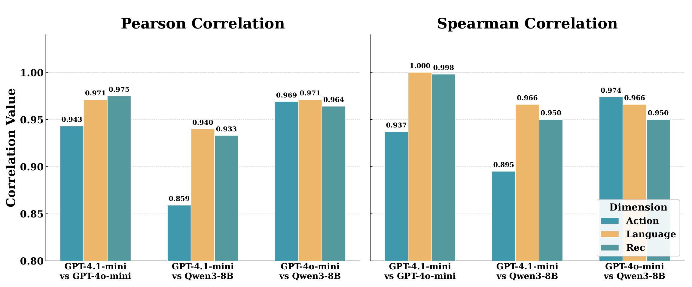
Fig. 9 检查一个重要质疑：如果用户模拟器本身换了 backbone，CRS 排名会不会变化？图中 Pearson 和 Spearman 相关都很高，Pearson 大致在 0.859 到 0.975，Spearman 在 0.895 到 1.000，并且论文标注统计显著。这说明 AdaptSim 的评估信号在不同模拟器 backbone 下相对稳定，至少在 action、language、recommendation 三个维度上没有完全依赖单一模型。这里的结论要适度：高相关不代表绝对无偏，也不代表所有领域都稳定；但它确实支撑了论文关于“evaluation protocol produces stable comparative signals”的说法。结合 Table 3，可以说 AdaptSim 更像一个可重复的评估环境，而不是只用某个 LLM 用户随便和系统聊几轮。
综合这些实验，AdaptSim 的强证据主要有三类。第一，作为模拟器，它在多领域、多维度上相对 RecUserSim、iEvaLM、CSHI 更强，并且 human validation 说明 pairwise judge 有一定可信度。第二，作为可控生成器，thinking step 和 open action space 都有消融支撑，说明风格控制与动作灵活性不是纯叙述。第三，作为 CRS 评估工具，它能把系统基本能力和粗心用户鲁棒性拆开测，并在不同模拟器 backbone 下保持较高相关。弱证据则主要是长期、多轮、真实线上场景仍然不足：Food、Beauty、Shop 是代表性域，但距离真实业务中混合意图、长期偏好、冷启动用户、复杂商品库还有距离；LLM judge 和元评估 LLM 也可能带来共同偏差。
4. 总结
4.1 我的判断
AdaptSim 值得关注的地方不是某个公式很新，而是它把评估用用户模拟器做成了一个更完整的系统。对 CRS 研究来说，用户模拟器经常被当作“生成用户回复的辅助工具”，但这篇论文把它提升为评估基础设施：一边自动适配领域和 prompt，一边控制用户动作与语言风格，再用 BFS 成对比较约束评估公平性。这个组合对工业推荐也有启发，因为真实业务通常无法为每个新类目、每种用户表达、每个系统版本收集大量人工对话标注。如果 AdaptSim 这类框架能稳定复现，它可以成为上线前压力测试的一部分，尤其用于发现拼写错误、短句、词序混乱、情绪化表达和多轮上下文分叉下的系统脆弱点。
但我不会把这篇论文解读成“用户模拟问题已经解决”。它的评估链路依赖多个 LLM：LLM 生成 prompt，LLM 发现问题，LLM 改 prompt，LLM 生成用户动作与回复，LLM-as-judge 做 pairwise evaluation。这样的闭环很强，也很容易出现共同偏差。比如元评估模型如果偏好礼貌、完整、语义显式的用户回复，它可能把真实用户的含糊表达当作低质量；judge 如果偏好更流畅的系统回复，也可能把推荐准确性和语言质量混在一起。论文用人工一致性和 backbone correlation 做了缓解，但还没有完全消除这些风险。
4.2 工程启发与复现建议
复现这类系统时，我会优先做三件事。第一，把 domain info 和 user profile schema 版本化，不要把领域字段藏在 prompt 文本里，否则所谓快速适配会变成不可追踪的 prompt 手工调试。第二，把 action generation 的候选动作、概率和最终选择都记录下来，尤其要记录被丢弃的低概率动作，因为鲁棒性压力测试往往需要稀有行为。第三，把评估协议和 judge prompt 固定成可审计配置，并保留每次 pairwise comparison 的上下文、两个系统回复和判定理由。AdaptSim 的论文公式给了框架，但真正可复现的关键在日志和配置，而不是只实现几个 LLM 调用。
落到推荐业务里，AdaptSim 最容易先用在离线回归测试。每次 CRS prompt、规划模块、召回/排序策略或工具调用逻辑更新后，可以用固定的一组用户 profile 和领域 prompt 生成对话树，再比较新旧系统在 action、language、recommendation 和 robustness 上的变化。它也适合做数据补充：把真实日志里少见但高风险的用户表达转成 style constraints，例如错别字、极短句、负面情绪、强约束、含糊偏好，然后让模拟器构造更多相似场景。需要避免的是直接把模拟对话当作训练真值；这些对话更适合评估和压力测试，若用于训练，应额外做人审或真实日志校准。
4.3 局限与后续跟进
这篇论文至少有四个局限。第一，APO 依赖 LLM 同时做错误发现和 prompt refinement，存在循环依赖；当 meta-evaluator 不够强时，很难判断问题来自 prompt、backbone 还是 evaluator。第二，开放动作生成使用最大概率动作，可能压制少见但真实的用户行为，导致压力测试覆盖不足。第三，thinking-enhanced style generation 只是 prompt 级控制，没有改变模型内部表示，长对话里风格仍可能被上下文稀释。第四，BFS 评估虽然保持局部上下文一致，但树状扩展成本会随深度和分支数增长，实际必须限制深度，这可能漏掉后期对话失败。第五，实验领域虽然包含 Food、Beauty、Shop 和 chit-chat，但还没有覆盖更复杂的多目标业务场景，如价格、库存、物流、售后和跨品类偏好同时出现的推荐对话。
后续我会重点跟进三条线。第一，看作者是否释放代码、prompt 模板和评估日志；如果没有开放这些，复现实验里的 prompt optimization 和 judge 一致性会比较困难。第二，关注是否有后续工作把 greedy action selection 改成多样性采样、coverage-guided search 或风险场景生成，这会直接影响鲁棒性测试价值。第三，把 AdaptSim 和真实用户日志做校准，验证模拟用户在轮数、请求长度、偏好变更、错别字比例、拒绝系统建议方式上是否接近真实分布。只有通过这种校准，AdaptSim 才能从“论文中的评估框架”进一步变成“可用于业务灰度前测试的用户模拟环境”。
总体上，AdaptSim 的贡献是清楚的：它把用户模拟器从静态 prompt 工具推进到可迭代优化、可控风格、开放动作和轮级成对评估结合的框架。它的实验也覆盖了主结果、人工验证、消融、鲁棒性和稳定性，不是只靠单张表支撑结论。我的保守判断是，它适合被当作 CRS 评估框架的参考实现思路，尤其适合补足推荐系统在“用户表达不完美”场景下的测试；但在真实部署前，还需要更严格的日志校准、人工抽检、成本控制和多模型偏差分析。